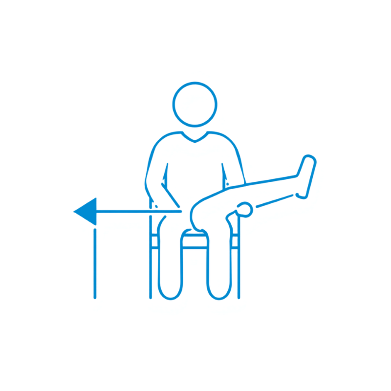
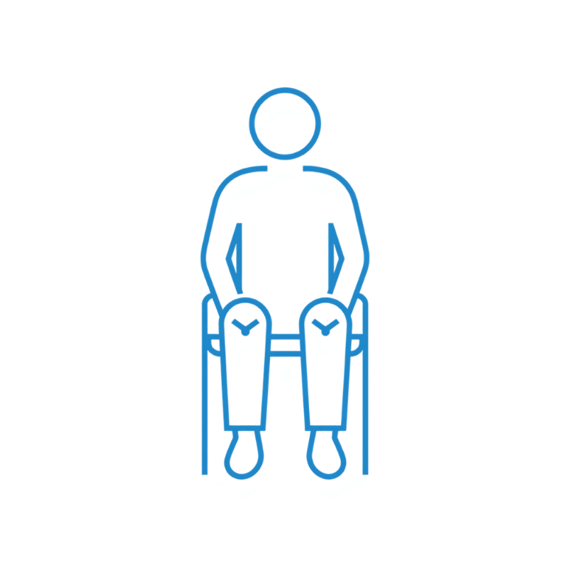
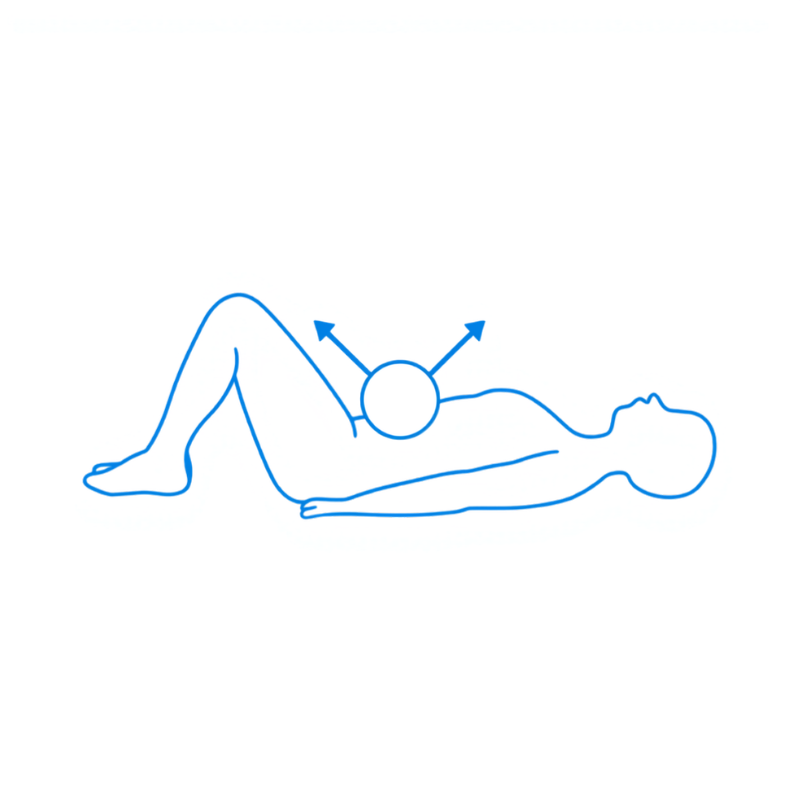
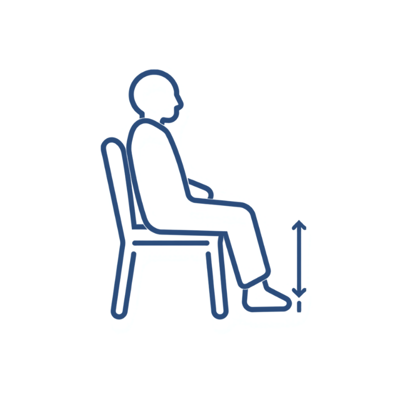
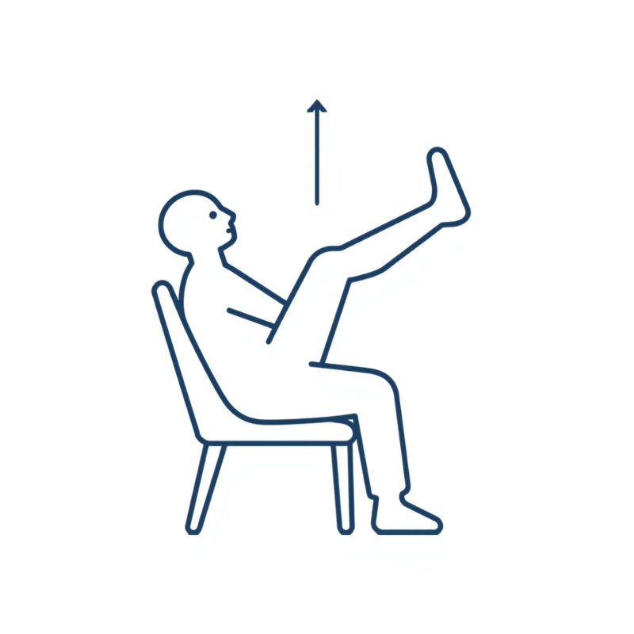
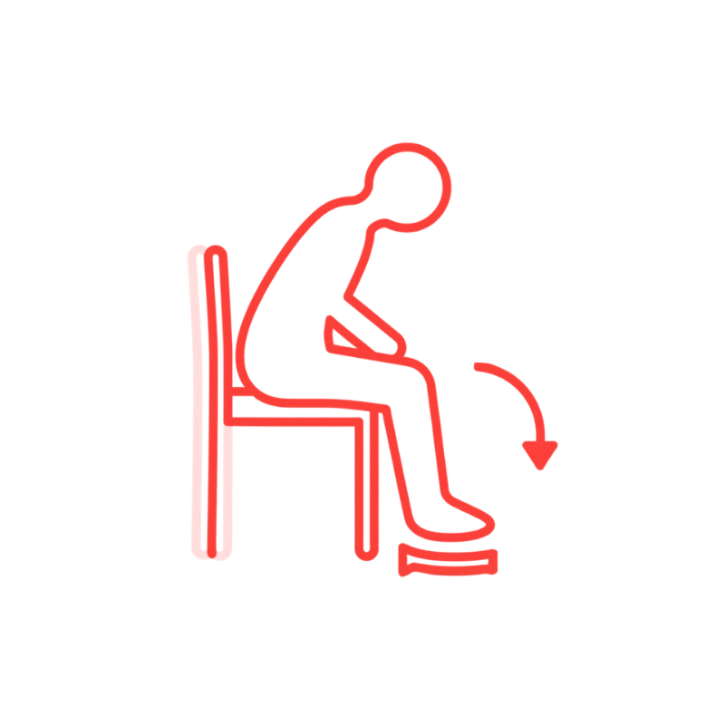
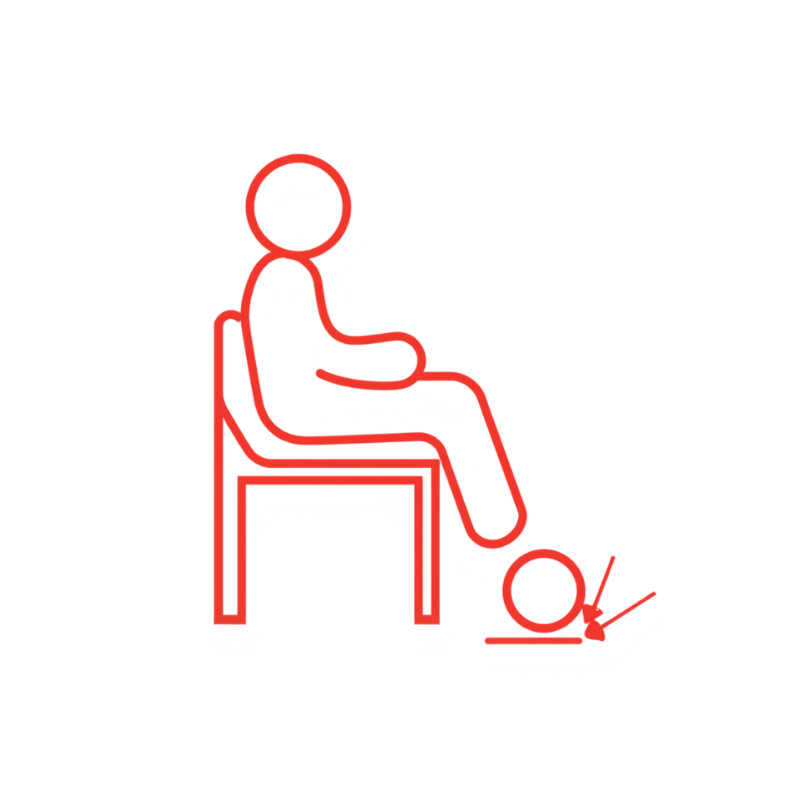
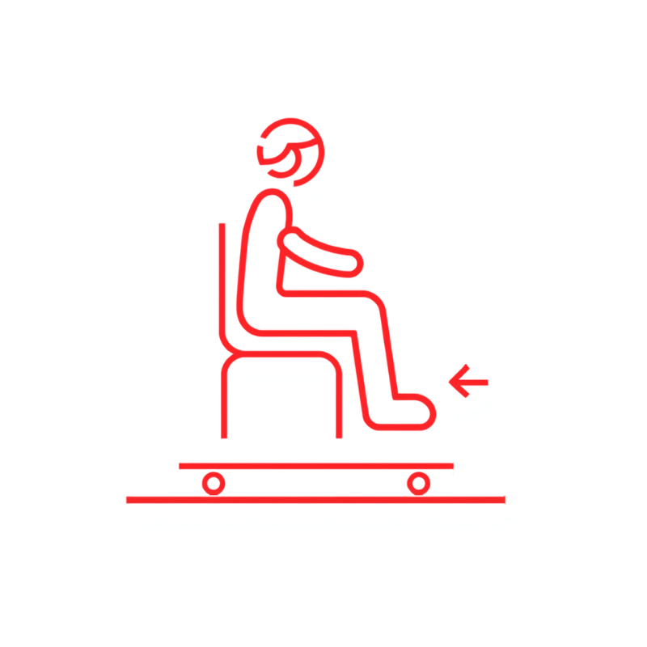
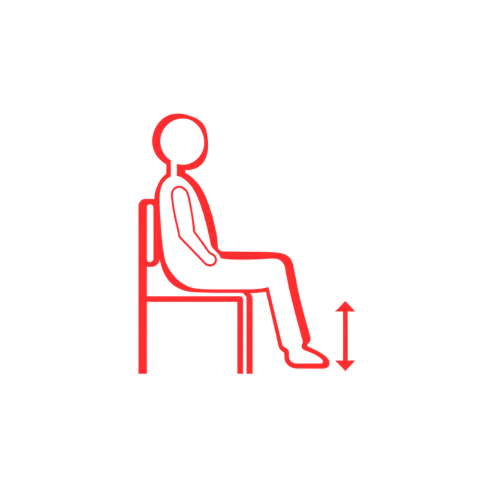

機能訓練 実施ガイド 1枚目
全種目、イスに座ったまま安全に実施できます
全種目、イスに座ったまま安全に実施できます





全種目、イスに座ったまま安全に実施できます




3区分から1つずつ＝計3種を、パターン①→⑩の順に
| パターン | ① 可動域（緑） | ② 筋力（青） | ③ 転倒予防（赤） |
|---|---|---|---|
| 1 | R1 ロール運動 | S1 座位 脚の横上げ運動 | F1 タオルギャザー |
| 2 | R2 足すり運動 | S2 座位 膝の開閉運動 | F2 ボール踏み |
| 3 | R1 ロール運動 | S3 ボールはさみ運動 | F3 棒の上で板を動かす |
| 4 | R2 足すり運動 | S4 座位 かかと上げ運動 | F4 座位 膝伸ばし運動 |
| 5 | R1 ロール運動 | S5 座位ステップ運動（足踏み） | F1 タオルギャザー |
| 6 | R2 足すり運動 | S1 座位 脚の横上げ運動 | F2 ボール踏み |
| 7 | R1 ロール運動 | S2 座位 膝の開閉運動 | F3 棒の上で板を動かす |
| 8 | R2 足すり運動 | S3 ボールはさみ運動 | F4 座位 膝伸ばし運動 |
| 9 | R1 ロール運動 | S4 座位 かかと上げ運動 | F1 タオルギャザー |
| 10 | R2 足すり運動 | S5 座位ステップ運動（足踏み） | F2 ボール踏み |
① 可動域運動 → 2枚目 ／ ② 筋力増強運動 → 3枚目 ／ ③ 転倒予防運動 → 4枚目 を参照してください。
座位メニューに慣れ、状態が安定している方向け（一部立位・見守り必須）
両脚立位
足幅を肩幅に開き30秒〜1分
半歩幅立位
足を半歩前後にずらす
タンデム立位
一直線に前後に並べる
片脚立位
5秒以上・最初は手すり保持
迷ったら中止。安全最優先
| 項目 | ◯ OK | △ 慎重に | ✕ 中止・連絡 |
|---|---|---|---|
| 収縮期血圧 | 100〜159 | 160〜179 / 90〜99 | 180以上 / 90未満 |
| 拡張期血圧 | 60〜99 | 100〜109 | 110以上 |
| 心拍数 | 50〜100 | 101〜119 | 120以上 / 40未満 |
| SpO2 | 95%以上 | 92〜94% | 91%以下 |
| 体温 | 36.0〜37.5℃ | 37.6〜37.9℃ | 38.0℃以上 |
| 症状 | なし | 軽度の息切れ・発汗 | 胸痛・強い動悸・意識変容・めまい・嘔気 |
毎回の訓練記録 簡易ガイド
| 項目 | 記載内容 |
|---|---|
| S（主観） | 利用者の主訴・体調訴え・当日の気分や意欲 |
| O（客観） | バイタル（BP・HR・SpO2・体温）、訓練実施項目と回数、実施中の様子 |
| A（評価） | 訓練中の反応、計画達成度、リスクの気づき |
| P（計画） | 次回に向けての調整事項、目標達成見込みの記載 |